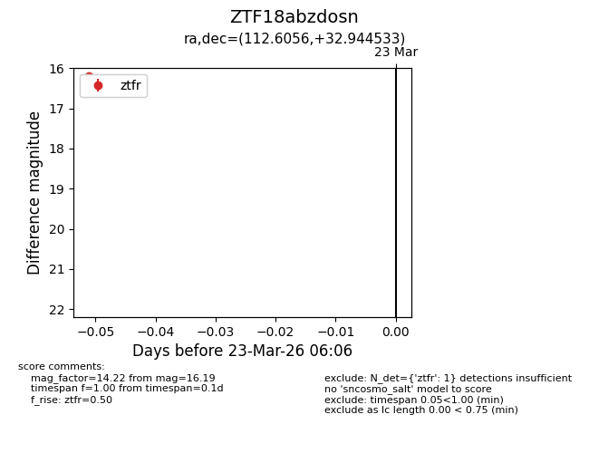
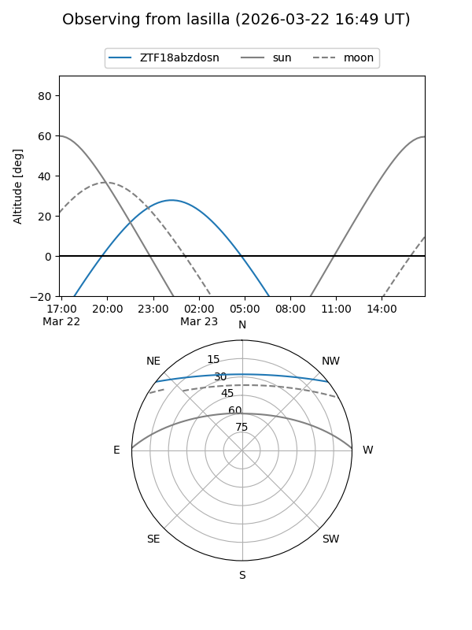
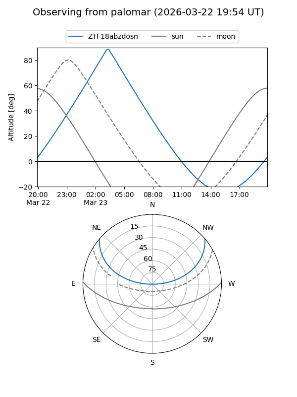

ZTF18abzdosn
Target ZTF18abzdosn at 2026-03-23 06:08
Aliases and brokers:
FINK: link
Lasair: link
ALeRCE: link
alt names
ZTF18abzdosn (ztf,fink_ztf)
Coordinates:
equatorial (ra, dec) = 112.6056,+32.94453
equatorial (HMS+DMS) = 07:30:25.34,+32:56:40.32
galactic (l, b) = (186.0530,+21.98781)
Flags:
Photometry:
last ztfr=16.19
1 ztfr detections
Lightcurve

Visibility


Additional plots